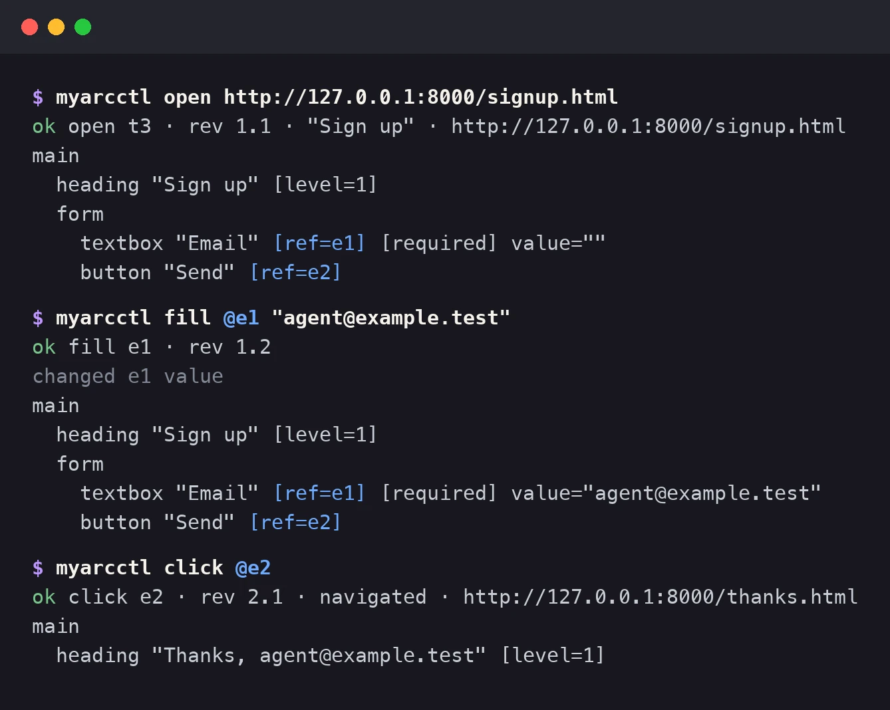
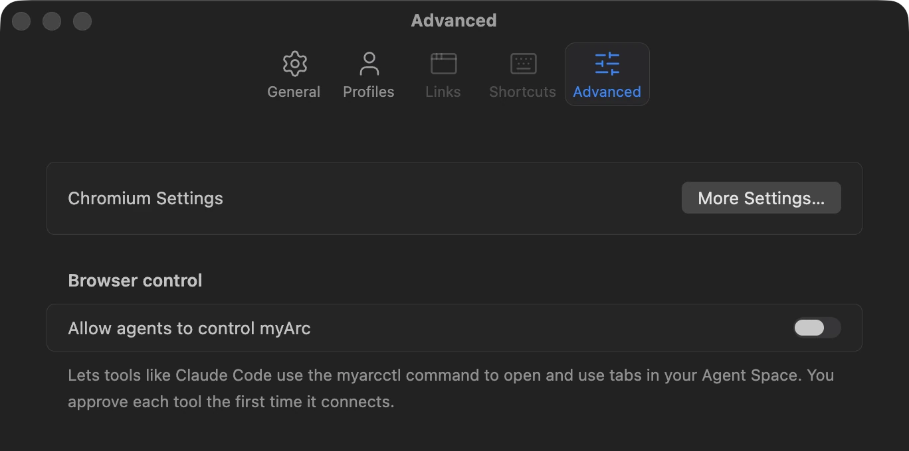
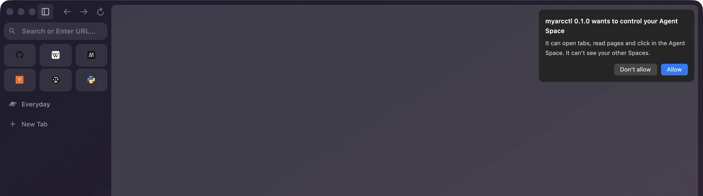
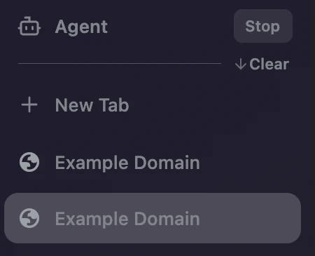
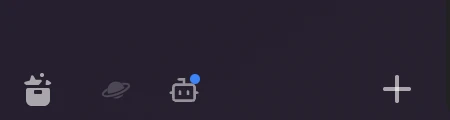
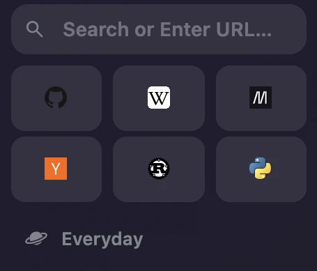

myArc is built by agents. I lead a group of them that write the code, review it and test it. They could launch myArc and take screenshots of it, but they couldn't click anything in it. Whenever one of them needed to browse, it got a separate automated Chrome with nothing in it. They were building a browser they couldn't use.
So this round I asked them to build a way in. An agent like Claude Code can now open pages in myArc, read them and click through them, in a Space of its own.
Reading a page without looking at it
Most AI tools that use a computer work from screenshots. The model gets a picture of the screen, guesses where the button is and clicks at those coordinates. It works, but every step sends a whole image, and if the guess is a few pixels off, the click hits something else.
myArc hands the agent a short text outline of the page instead, one heading, link, field or button per line, and gives everything it can act on a number. To sign up on a form, the agent fills e1 with an email address and clicks e2. After each action it gets a fresh outline back, so it sees what changed without asking.


In the agents' test runs an outline came to a couple hundred characters per step. Each number stays tied to one element, so if the page changed under the agent, myArc refuses and the agent reads it again rather than clicking whatever now sits in that spot. Page text can't pass itself off as a button either, because whatever a page says comes back in quotes.
The agent gets in through myarc, a small command-line tool that also runs as an MCP server, the common way AI apps plug in outside tools. It works in its own Agent Space, the bot icon in the sidebar footer, and its pages load in the background while you keep browsing. Your other Spaces and Profiles stay out of its reach.
The click that crashed
The agents started testing it right away, and soon one of their clicks killed the page. It didn't happen every time. It seemed to follow a pause, with the agent sitting idle for a bit before clicking, and for a while it looked like nothing was writing a crash report. Then it turned out Chromium had saved every one, all pointing at the same spot in its code.
The bug was in Chromium. Before a click, the browser checks where the element sits so it can scroll it into view, and that check read the page layout without bringing it up to date. In a tab you're looking at, layout refreshes every frame, so nobody notices. The agent's tab sits in the background and draws no frames, so its layout goes stale, and one of Chromium's safety checks caught the stale read and stopped the page. The fix is one line that updates the layout first, which the function right next to it already did. After that the same test clicked through every round.
Who gets to drive
With clicks working, the next question was how much an agent should be allowed to do without asking you. My answer is nothing, until you turn it on in Settings.


The first time a tool connects, a card names it and asks whether it may control your Agent Space. Allow lasts until you quit myArc.


The card can't prove who is asking, though. Each tool names itself when it connects, so another program on your account could claim to be myarc. You get to say yes or no and see the name it gave, and that's all.
While an agent works, a blue dot sits on the bot icon and a Stop button appears next to the Agent Space's name. Stop cuts it off at once, and the next time it connects, myArc asks again. Claude Code also gets a skill that teaches it the commands and tells it to check with you before it sends, buys or posts anything.




A sidebar full of globes
When the agents opened their test windows, I noticed every pin was a gray globe. myArc only learned a site's icon when you visited it, and those test profiles had never visited anything. After an import from Arc, everyone would have seen the same thing.
Now a pin without an icon asks its own site for one in the background and keeps it. The request sends no cookies, asks only for the site's home page, never the page you pinned, and goes straight to that site with no Google in between.


Getting ready to leave Arc
That import is the next big piece. Arc can export your Spaces to a file, under Settings > Advanced > Export Data, and myArc can now read that file into a list of Spaces, their groups and their links, in Arc's order. Anything it doesn't understand gets flagged with its line number, so nothing goes missing quietly. It doesn't create anything in the browser yet. Turning that list into real Spaces and pins comes next, and it's the part I'm waiting for. I've used Arc since 2023, and I'd rather not rebuild those Spaces by hand.
Agent control and pin icons are in the nightly. One more change came from reading this post. The command was called myarcctl until I tripped over it here, and now it's myarc.